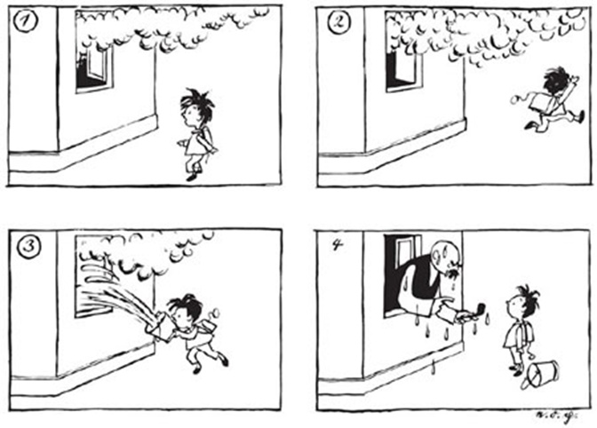

AB: Techniken des Erzählens · e.o. plauen, „Vater und Sohn – der gelöschte Vater". Gesamtausgabe Erich Ohser. Konstanz 2000.
💾 Deine Antworten werden automatisch in diesem Browser gespeichert – du kannst die Seite schließen und später weitermachen.
Die Bildergeschichte

e.o. plauen, „Vater und Sohn – der gelöschte Vater". Gesamtausgabe Erich Ohser. Konstanz 2000.
Die drei Texte
Text I
Als ich gestern aus der Schule kam, sah ich Rauch aus unserem Wohnzimmerfenster aufsteigen. Sofort holte ich mir einen Eimer mit Wasser und versuchte den Brand zu löschen, doch dann stellte sich heraus, dass mein Vater nur eine Pfeife geraucht hatte.
Text II
Der kleine Max kam aus der Schule nach Hause und sah Qualm aus dem Wohnzimmer seines Hauses in die Höhe steigen. Sofort holte er einen Eimer Wasser und versuchte das vermeintliche Feuer zu löschen, da der arme Junge zu dem Zeitpunkt noch gar nicht wusste, dass sein Vater nur eine Pfeife rauchte.
Text III
Ein Junge sieht Qualm aus einem Fenster in die Luft steigen. Er rennt weg und kommt mit einem Eimer Wasser, den er durch das geöffnete Fenster schüttet, wieder. Daraufhin kommt ein nasser Mann mit einer Pfeife ans Fenster und schimpft den Jungen aus.
Aufgabe 1: Kreuze an, fülle aus und gib Textbelege an
Aufgabe 2: Wirkung des Erzählers
Erläutere für jeden Text, welche Wirkung der jeweilige Erzähler auf die Leserin / den Leser hat.
Text I
baut Spannung auf
Text II
will beeinflussen
Text III
langweilig
Aufgabe 3: Eigene Erzählung
Erschaffe einen Erzähler und lass diesen eine kurze Erzählung schreiben, die zur Bildergeschichte passt.